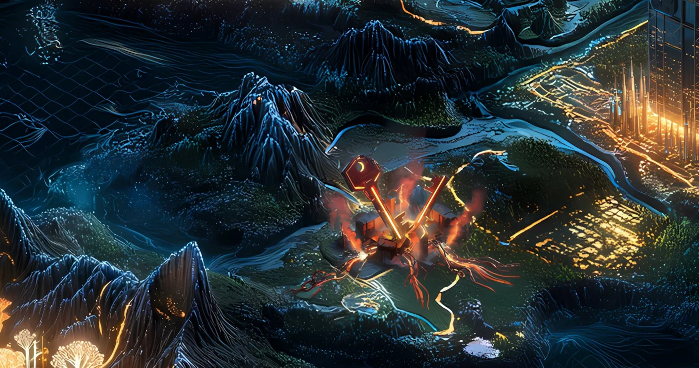

Record // SECURITY
LEAK RUINS

Thousands of wallets emptied overnight — the culprit wasn't a contract, it was an app quietly logging your seed phrase.
What happened
Beginning August 2, 2022, attackers drained roughly 9,231 Solana wallets of about $4.1M over several hours. Investigators traced the root cause to the Slope mobile wallet, whose app inadvertently transmitted users' seed phrases in readable text to an application-monitoring service, where they could be harvested. The Solana protocol itself was not compromised; hardware wallets and seeds never imported into Slope were unaffected.
Why Solana remembers it
A landmark reminder that wallet-application security — not just the underlying chain — is where users get drained, and that logging secrets in plaintext is a catastrophic anti-pattern.
On the map
Cracked ruins on a hillside where a hidden seam leaked the keys to every vault.